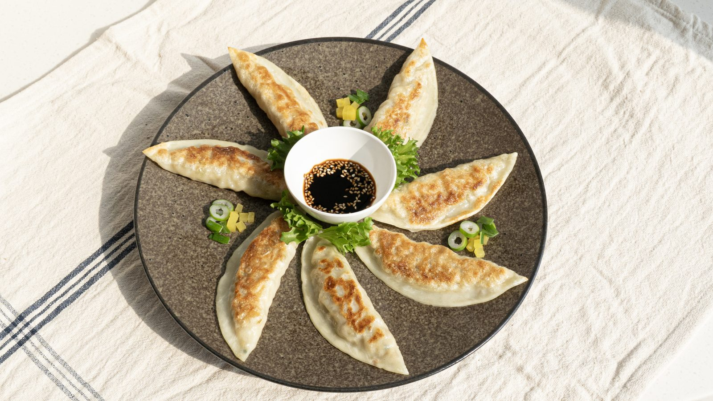
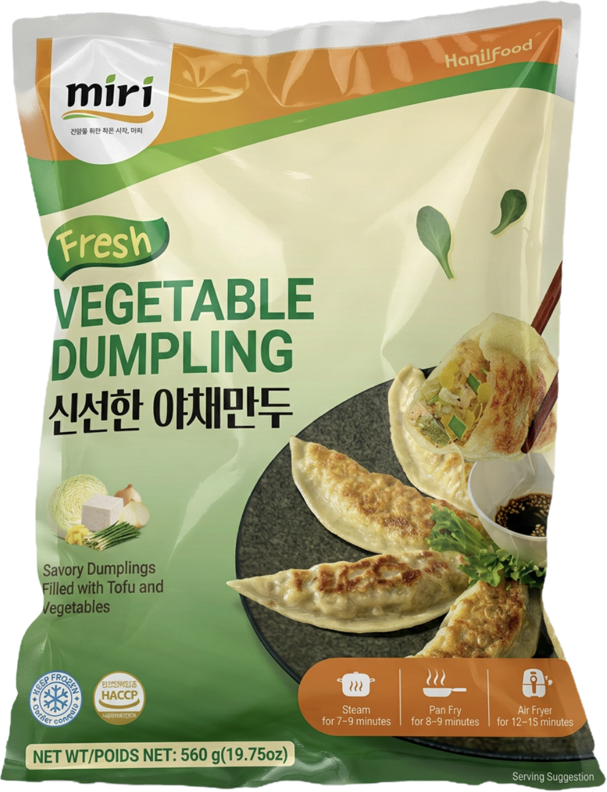

Tired of mushy veggie dumplings? miri's crisp up beautifully and cook in minutes, packed with tofu and garden vegetables for a light, savory bite that's endlessly versatile — from weeknight dinners to party appetizers. Pan-fry them as vegetable potstickers, steam them, or air fry straight from frozen. As frozen veggie dumplings go these are unusually crisp, and they work anywhere plant based dumplings or fried dumplings korean style are on the menu. Trade buyers know them as MIRI vegetable potstickers; ask us about MIRI vegetable dumplings wholesale, MIRI plant based dumplings wholesale and MIRI vegetable potstickers wholesale programs.
| Product Name | miri Fresh Vegetable Dumpling |
|---|---|
| Net Weight | 560g · 14 packs / case |
| Shelf Life | 18 months frozen |
| Storage | Keep frozen under −18°C |
| Main Ingredients | Filling: cabbage, onion, tofu, glass noodle, dried radish, soy protein, green onion, garlic chives, sesame oil, garlic. Dough: wheat flour. Contains: Wheat, Soy, Sesame. |
| Certifications | HACCP · ISO 9001/22000 |
| Private Label / OEM | Available |
| Servings per container | 7 |
| Serving size | 3 pieces (80g) |
| Calories | 120 |
| Total Fat | 2.5 g (3%) |
| Saturated Fat | 0 g (2%) |
| Trans Fat | 0 g |
| Cholesterol | 0 mg (0%) |
| Sodium | 330 mg (14%) |
| Total Carbohydrate | 22 g (8%) |
| Dietary Fiber | 2 g (8%) |
| Total Sugars | 3 g |
| Incl. Added Sugars | <1 g (1%) |
| Protein | 4 g |
| Vitamin D | 0 mcg (0%) |
| Calcium | 36 mg (2%) |
| Iron | 0.6 mg (4%) |
| Potassium | 140 mg (6%) |